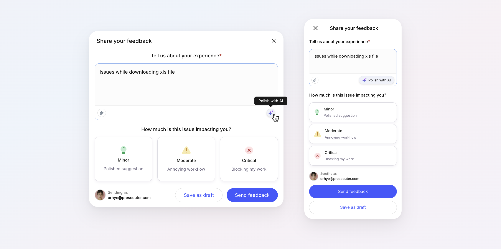
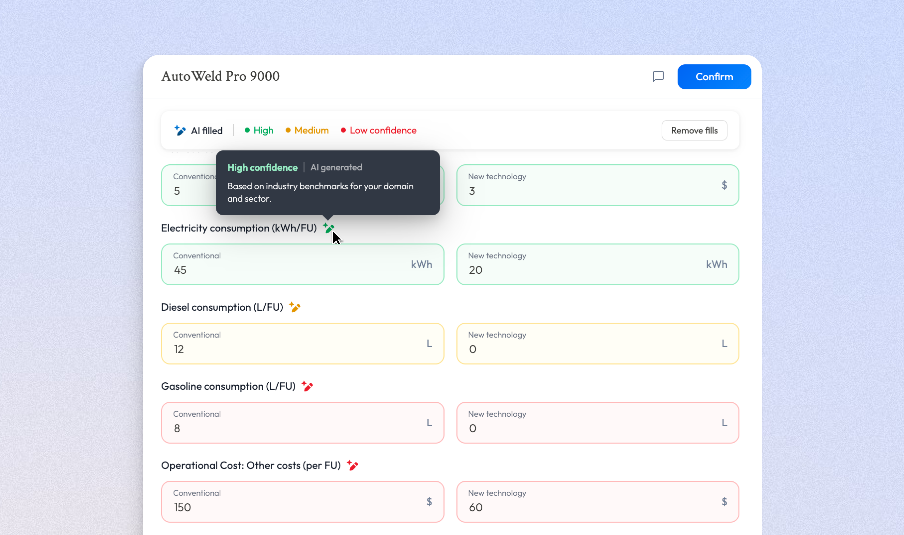
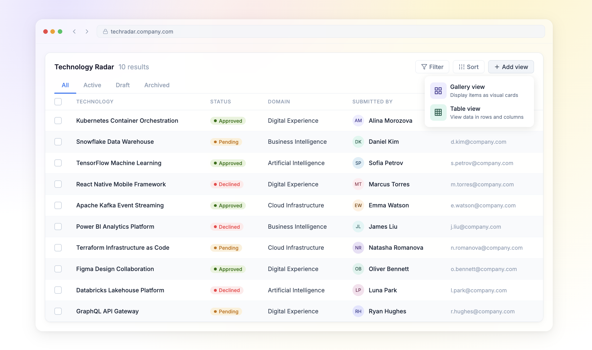

Smarter Feedback Collection
AI-driven insights for enterprise teams. Redesigned the feedback pipeline for a Fortune 500 client, integrating AI-powered analysis to surface actionable insights from thousands of user responses.

Product Designer crafting thoughtful, human-centered experiences for enterprise teams, with a focus on AI-driven workflows, design systems, and vibe coding.
AI-driven insights for enterprise teams. Redesigned the feedback pipeline for a Fortune 500 client, integrating AI-powered analysis to surface actionable insights from thousands of user responses.

Helping non-technical users complete complex forms without friction. Designed a smart submission flow where AI analyses responses and documents to suggest values for optional fields, removing the burden of technical knowledge from the user.

Making complex data accessible to every stakeholder. Led the end-to-end redesign of an enterprise analytics platform, transforming dense data tables into clear, interactive visualizations.
